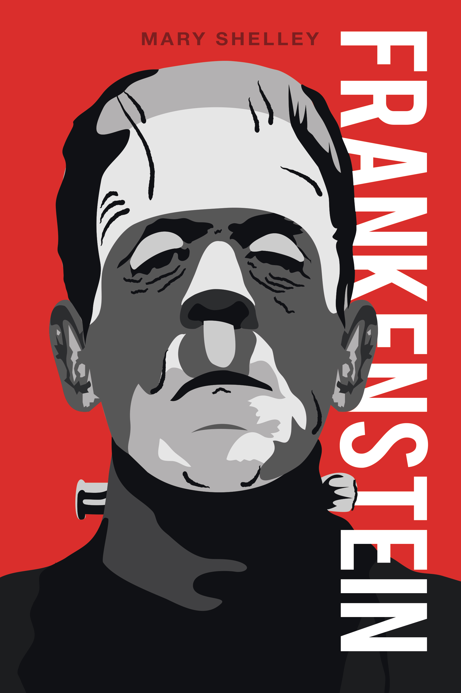

FÖRFATTAREN
Mary Shelley, ursprungligen Mary Wollstonecraft Godwin, född 30 augusti 1797 i London, död 1 februari 1851 i samma stad, var en brittisk (engelsk) roman- och novellförfattare som också publicerade dramatik, essäer, biografier och reseskildringar. Hon är mest känd för sin roman Frankenstein: eller den moderne Prometeus (Frankenstein: or The Modern Prometheus) från 1818. Hon var dotter till den politiske filosofen William Godwin och filosofen och feministen Mary Wollstonecraft samt styvsyster till poeten Claire Clairmont. Mary Shelleys far såg till att hon fick en för den tiden mycket god, om än informell, utbildning som präglades av liberala idéer. Hon gifte sig med en av romantikens poeter, Percy Bysshe Shelley.
BOKENS HANDLING
Victor Frankenstein åker till Ingolstadt för att studera. Väl där fastnar han för naturvetenskapen och framför allt för kemin. Han läser alla böcker han kan komma över och går på alla föreläsningar inom ämnet. Han intresserar sig även för förlegade läror som Cornelius Agrippa och Paracelsus. Till slut är det en sak som särskilt intresserar honom - kroppens uppbyggnad och varifrån livets principer utgår. Han studerar anatomi och intresserar sig för döden för att på så sätt få svar om livets uppkomst.
Efter en tid finner han att han är benägen att skänka liv åt döda ting och bestämmer sig för att skapa en egen varelse från död materia. Detta visar sig dock inte vara alltför lyckat. Frankenstein tänker inte igenom de konsekvenser hans handlande kan få och när monstret till slut får liv blir Frankenstein så uppjagad av detta faktum att han flyr platsen. När han kommer tillbaka är monstret borta. Victor jagar monstret med hjälp av sex eller sju döda soldater men lyckas inte ta fast monstret. Monstret vandrar sedan ensam omkring och försöker lära känna människorna och deras vanor. Men hans utseende skrämmer folk och han möts därför med hat och rädsla vartän han vänder sig. Han får stora hämndbegär och väljer att rikta dessa mot sin skapare, Frankenstein.

Bild på Frankenstein book, från hemsidan: https://www.deviantart.com/, bild skapad av: mario0357, Creative Commons Attribution-NonCommercial-No Derivatives Works 3.0 License